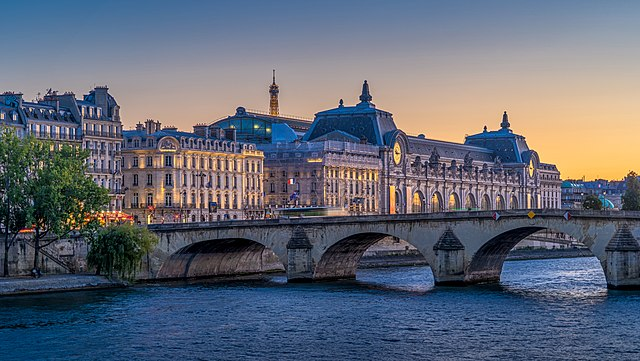

France Landmarks
Eiffel Tower
The Eiffel Tower is a wrought-iron lattice tower on the Champ de Mars in Paris, France. It is named after the engineer Gustave Eiffel, whose company designed and built the tower. Locally nicknamed "La dame de fer", it was constructed from 1887 to 1889 as the centerpiece of the 1889 World's Fair and was initially criticised by some of France's leading artists and intellectuals for its design, but it has become a global cultural icon of France and one of the most recognisable structures in the world. The Eiffel Tower is the most visited monument with an entrance fee in the world; 6.91 million people ascended it in 2015. It was designated a monument historique in 1964, and was named part of a UNESCO World Heritage Site in 1991. The tower is 330 metres tall, about the same height as an 81-storey building, and the tallest structure in Paris. Its base is square, measuring 125 metres on each side. During its construction, the Eiffel Tower surpassed the Washington Monument to become the tallest human-made structure in the world, a title it held for 41 years until the Chrysler Building in New York City was finished in 1930. Wikipedia
Louvre Museum
The Louvre, or the Louvre Museum, is the world's most-visited museum, and a historic landmark in Paris, France. It is the home of some of the best-known works of art, including the Mona Lisa and the Venus de Milo. A central landmark of the city, it is located on the Right Bank of the Seine in the city's 1st arrondissement. At any given point in time, approximately 38,000 objects from prehistory to the 21st century are being exhibited over an area of 72,735 square meters. Attendance in 2021 was 2.8 million due to the COVID-19 pandemic. The museum was closed for 150 days in 2020, and attendance plunged by 72 percent to 2.7 million. Nonetheless, the Louvre still topped the list of most-visited art museums in the world in 2021. The museum is housed in the Louvre Palace, originally built in the late 12th to 13th century under Philip II. Remnants of the Medieval Louvre fortress are visible in the basement of the museum. Due to urban expansion, the fortress eventually lost its defensive function, and in 1546 Francis I converted it into the primary residence of the French Kings. The building was extended many times to form the present Louvre Palace. Wikipedia

Cathédrale Notre-Dame
Notre-Dame de Paris, referred to simply as Notre-Dame, is a medieval Catholic cathedral on the Île de la Cité, in the 4th arrondissement of Paris. The cathedral, dedicated to the Virgin Mary, is considered one of the finest examples of French Gothic architecture. Several of its attributes set it apart from the earlier Romanesque style, particularly its pioneering use of the rib vault and flying buttress, its enormous and colourful rose windows, and the naturalism and abundance of its sculptural decoration. Notre Dame also stands out for its musical components, notably its three pipe organs and its immense church bells. Construction of the cathedral began in 1163 under Bishop Maurice de Sully and was largely completed by 1260, though it was modified frequently in the centuries that followed. In the 1790s, during the French Revolution, Notre-Dame suffered extensive desecration; much of its religious imagery was damaged or destroyed. In the 19th century, the coronation of Napoleon I and the funerals of many of the French Republic's presidents took place at the cathedral. Wikipedia
Musée d'Orsay
The Musée d'Orsay is a museum in Paris, France, on the Left Bank of the Seine. It is housed in the former Gare d'Orsay, a Beaux-Arts railway station built between 1898 and 1900. The museum holds mainly French art dating from 1848 to 1914, including paintings, sculptures, furniture, and photography. It houses the largest collection of Impressionist and post-Impressionist masterpieces in the world, by painters including Berthe Morisot, Claude Monet, Édouard Manet, Degas, Renoir, Cézanne, Seurat, Sisley, Gauguin, and Van Gogh. Many of these works were held at the Galerie nationale du Jeu de Paume prior to the museum's opening in 1986. It is one of the largest art museums in Europe. In 2021 the museum had one million visitors, up 30 percent from attendance in 2020, but far behind earlier years due to the COVID-19 pandemic. Despite the drop, it ranked fifteenth in the list of most-visited art museums in 2020. Wikipedia
Montmartre
Montmartre is a large hill in Paris's 18th arrondissement. It is 130 m high and gives its name to the surrounding district, part of the Right Bank in the northern section of the city. The historic district established by the City of Paris in 1995 is bordered by rue Caulaincourt and rue Custine on the north, rue de Clignancourt on the east, and boulevard de Clichy and boulevard de Rochechouart to the south, containing 60 ha. Montmartre is primarily known for its artistic history, the white-domed Basilica of the Sacré-Cœur on its summit, and as a nightclub district. The other church on the hill, Saint Pierre de Montmartre, built in 1147, was the church of the prestigious Montmartre Abbey. On August 15, 1534, Saint Ignatius of Loyola, Saint Francis Xavier and five other companions bound themselves by vows in the Martyrium of Saint Denis, 11 rue Yvonne Le Tac, the first step in the creation of the Jesuits. Wikipedia

Arc de Triomphe
The Arc de Triomphe de l'Étoile is one of the most famous monuments in Paris, France, standing at the western end of the Champs-Élysées at the centre of Place Charles de Gaulle, formerly named Place de l'Étoile—the étoile or "star" of the juncture formed by its twelve radiating avenues. The location of the arc and the plaza is shared between three arrondissements, 16th, 17th, and 8th. The Arc de Triomphe honours those who fought and died for France in the French Revolutionary and Napoleonic Wars, with the names of all French victories and generals inscribed on its inner and outer surfaces. Beneath its vault lies the Tomb of the Unknown Soldier from World War I. The central cohesive element of the Axe historique, the Arc de Triomphe was designed by Jean Chalgrin in 1806; its iconographic programme pits heroically nude French youths against bearded Germanic warriors in chain mail. It set the tone for public monuments with triumphant patriotic messages. Inspired by the Arch of Titus in Rome, Italy, the Arc de Triomphe has an overall height of 50 metres, width of 45 m and depth of 22 m, while its large vault is 29.19 m high and 14.62 m wide. Wikipedia